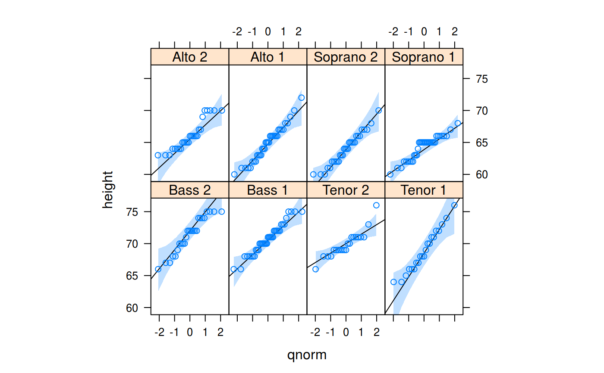

Panel function to go along with lattice::qqmath() and
lattice::panel.qqmathline(). Adds filled confidence bands to the Q-Q-plot.
panel.qqmathci(x, y = x, distribution = qnorm, probs = c(0.25, 0.75), qtype = 7, groups = NULL, ci = 0.95, alpha = 0.25, col = trellis.par.get("plot.line")$col, ..., col.line)
| x | The original sample, possibly reduced to a fewer number of
quantiles, as determined by the |
|---|---|
| y | an alias for |
| distribution | quantile function for reference theoretical distribution. |
| probs | numeric vector of length two, representing probabilities. Corresponding quantile pairs define the line drawn. |
| qtype | the |
| groups | optional grouping variable. If non-null, a line will be drawn for each group. |
| ci | Confidence level |
| alpha | Alpha level for the color fill |
| col | Color fill for the confidence bands. |
| … | Arguments passed to |
| col.line | Color fill for the confidence bands. Is used internally
by |
Augments a trellis plot panel, such as that
created by lattice::qqmath(), with confidence levels.
The function tries to figure out the density function counterpart to
that provided in the argument distribution by regular expressions.
qqmath(~ height | voice.part, aspect = "xy", data = singer, prepanel = prepanel.qqmathline, panel = function(x, ...) { panel.qqmathci(x, ...) panel.qqmathline(x, ...) panel.qqmath(x, ...) })